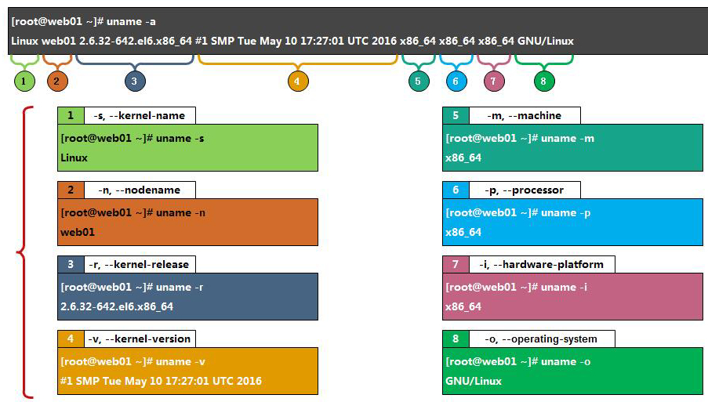

记录平时常用易忘的 Linux 命令
【参考】
目录
系统信息 [Top]

uname -a # 查看 Linux 内核版本信息
cat /proc/version # 查看内核版本
cat /etc/os-release # 查看Linux系统版本
cat /etc/issue # 查看系统版本
lsb_release -a # 查看系统版本，可以带各种参数, -a ALL
locale -a # 列出所有语系
locale # 当前环境变量中所有编码
hwclock # 查看时间
who # 显示已登录用户
w # 显示已登录用户并显示它们正在执行任务
whoami # 查看当前用户名
logname # 查看初始登录用户名
uptime # 查看服务器启动时间
sar -n DEV 1 10 # 查看网卡网速流量
dmesg # 显示开机信息
lsmod # 查看内核模块
硬件信息 [Top]
lscpu# 查看 CPU 信息
more /proc/cpuinfo# 查看 CPU 信息
cat /proc/cpuinfo | grep name | cut -f2 -d: | uniq -c # 查看 CPU 型号和逻辑核心数
getconf LONG_BIT # CPU 运行的位数
cat /proc/cpuinfo | grep 'physical id' | sort | uniq -c # 物理 CPU 个数
cat /proc/cpuinfo | grep flags | grep 'lm' | wc -l # 结果大于 0 则支持 64 位
more /proc/meminfo # 查看内存信息
dmidecode # 查看全面硬件信息
dmidecode | grep "Product Name" # 查看服务器型号
dmidecode | grep -P -A5 "Memory\s+Device" | grep Size | grep -v Range # 查看内存插槽
cat /proc/mdstat # 查看软 raid 信息
cat /proc/scsi/scsi # 查看 Dell 硬 raid 信息 ( IBM、HP 需要官方检测工具 )
lspci # 查看硬件信息
lspci | grep RAID # 查看是否支持 RAID
lspci -vvv | grep Ethernet # 查看网卡型号
lspci -vvv | grep Kernel | grep driver # 查看驱动模块
modinfo tg2 # 查看驱动版本 ( 驱动模块 )
ethtool -i <网卡名> # 查看网卡驱动版本，先用 ip -a 查看网卡名
日志管理 [Top]
搜索命令 [Top]
1、find
实时查找工具，通过遍历指定路径而完成对文件的查找，精确实时查找，但速度慢，且只能搜索用户具备读取和执行权限的目录
find <搜索路径> [选项]|[表达式] ... <处理动作><搜索路径>- 指定搜索范围路径，默认为当前目录<处理动作>- 指定对符合条件的文件的操作，默认输出至屏幕[选项]-name- 搜索文件（夹）名- -iname：name的忽略大小写版本
- -lname pattern：查找符号连接文件名为pattern的文件
- -ilname：lname的忽略大小写版本
-type filetype- 以指定文件类型filetype查找文件，filetype可以是：- b：块设备
- c：字符设备
- d：目录
- p：命名管道
- f：普通文件
- l：符号连接
- s：socket
-regex "PATTERN"- 以PATTERN匹配整个文件路径字符串，而不仅仅是文件名称-iregex- regex 的忽略大小写版本-inum- 根据文件的 inode 编号查找-size [+-]n[cwbkMG]- 指定文件长度查找文件。单位可以是：- c：字节单位
- b：默认以块为单位，块大小为 512 字节
- w：以 words 为单位，words 表示两个字节
- k：以 1024 字节为单位
- M：以 1048576 字节为单位
- G：以 1073741824 字节为单位
- +或-：文件大小大于或小于 n 单位
[表达式]expr1 expr2expr1 -a expr2或expr1 -and expr2- 效果一样，若 expr1 是 false 则不执行 expr2 ，反之则执行 expr2find / -size +10M -a -size -50M -type f- 根目录下搜索大于 10M 且 小于 50M 的普通文件
expr1 -o expr2或expr1 -or expr2- 效果一样，类似上面
实战
# 正则方式查找 .txt 和 pdf
$ find . -regex ".*\(\.txt|\.pdf\)$"
# 查找 txt 和 pdf 文件
$ find . \( -name "*.txt" -o -name "*.pdf" \) -print
# 查找所有非 txt 文本
$ find . ! -name "*.txt" -print
# 最近 7 天被访问过的所有文件
$ find . -atime 7 -type f -print
# 寻找大于 2k 的文件
$ find . -type f -size +2k
# 找具有可执行权限的所有文件
$ find . -type f -perm 644 -print
# 找用户weber所拥有的文件
$ find . -type f -user weber -print
# 删除当前目录下所有的swp文件
$ find . -type f -name "*.swp" -delete
# 将当前目录下的所有权变更为weber
$ find . -type f -user root -exec chown weber {} \
2、locate
原理
- Linux 系统会在
/etc/crontab设定每天执行一次updatedb，而updatedatedb这个命令会建立硬盘中的所有档案和目录资料的索引数据库 更新lib/mlocate/mlocage.db，执行locate命令会在这个索引数据库中查找，所以相比于find命令查找locate更快
$ cat /etc/crontab
25 6 * * * root test -x /usr/sbin/anacron || ( cd / && run-parts --report /etc/cron.daily )
. . .
$ ls /etc/cron.daily
mlocate
. . .
$ cat /etc/cron.daily/mlocate
# 可以看到定时执行 updatedb 具体过程
locate不能查找到上次(一般一天更新一次)updatedb或变动的文件，所以，需要查找当天变动的文件，可以前执行一边updatedb，更新索引数据库，再执行locatelocate [选项] 目标名[选项]-r- 使用正规运算式 做寻找的条件
# 搜索 /etc/ 目录下名为 passwd 的文件路径
$ locate /etc/passwd
/etc/passwd
/etc/passwd-
/snap/core/7917/etc/passwd
/snap/core/8039/etc/passwd
# 搜索主目录下以 a 开头的所有文件，且不区分大小写
$ locate -i ~/a
3、whereis
whereis [选项] commandName- 用于定位命令的二进制可执行文件、源码文件和手册文件
[选项]-b- binaries-m- manuals-s- sources
$ whereis docker
docker: /usr/bin/docker /etc/docker /usr/libexec/docker /usr/share/man/man1/docker.1.gz
# 选项一定要放在 whereis 和 commandName 之间
$ whereis -b docker
docker: /usr/bin/docker /etc/docker /usr/libexec/docker
4、which
- 在当前环境变量
$PATH路径中，搜快速查找命令可执行文件路径 which [-a] commandName[-a]- 输出所有匹配的结果
$ which docker
/usr/bin/docker
# -a 必须在 which 和 commandName 之间
$ which -a java
/usr/lib/jvm/jdk-12.0.1/bin/java
/usr/bin/java
5、grep
6、af
5、grep
8、fzf
- 命令行交互式模糊匹配
- https://github.com/junegunn/fzf
screen [Top]
yum install screenapt install screenscreen- 新建一个会话screen -S [name]- 新建一个 name 会话Ctrl+a+d- 暂离当前会话screen -r-当只有一个会话时，直接重新进入会话screen -r [name]|[id]- 重新进入 name 会话screen -ls- 列出已创建的会话exit- 在需要退出的会话执行 exit ，即删除当前会话
wget [Top]
- wget - World Wide Web Get
wget 支持 http、https 和 ftp 协议，支持 ftp 和 http 下载方式，支持通过 http 代理（ 但不支持通过 socks 代理 ）
wget [options]... [URL]...
常用命令
支持断点续传
wget -c URL
获取https地址时不检查证书
wget --no-check-certificate URL
后台下载文件
wget -b URL # 查看下载进度命令：tail -f wget-log
测试下载链接
wget --spider URL
设定下载带宽上线，实现限速下载
wget --limit-rate 数字k(千字节)/m(兆字节) URL
访问需认证的页面
wget --user username -password password URL # 指定–user 和–password参数
wget --user username --ask-password pass URL # 不指定密码，而由网页提示并手动的输入密码
从保存多个链接的文件读取 URL 并下载（又称递归下载）
cat > filelist.txt url1 url2 url3 url4
wget -i filelist.txt
限制总下载文件大小
wget -Q 5m -i filelist.txt
想要下载的文件超过5M而退出下载，-Q 参数对单个文件下载不起作用，只能递归下载时才有效
爬取整站
wget --random-wait -r -p -e robots=off -U mozilla http://www.baidu.com
wget -c -r -npH -k -nv http://www.baidu.com
参数说明
-c：断点续传
-r：递归下载
-np：递归下载时不搜索上层目录
-nv：显示简要信息
-nd：递归下载时不创建一层一层的目录,把所有文件下载当前文件夹中
-p：下载网页所需要的所有文件(图片,样式,js文件等)
-H：当递归时是转到外部主机下载图片或链接
-k：将绝对链接转换为相对链接,这样就可以在本地脱机浏览网页了
-L: 只扩展相对连接，该参数对于抓取指定站点很有用，可以避免向宿主主机
启用地址伪装
-user-agent="Mozilla/5.0 (Windows NT 10.0; WOW64) AppleWebKit/537.36 (KHTML, like Gecko) Chrome/53.0.2785.104 Safari/537.36 Core/1.53.4482.400 QQBrowser/9.7.13001.400"
GCC [Top]
GCC - GNU project C and C++ compiler
gcc 命令使用 GNU 推出的基于 C/C++ 的编译器，是开放源代码领域应用最广泛的编译器，具有功能强大，编译代码支持性能优化等特点
经过了这么多年的发展，GCC 已经不仅仅能支持 C 语言；它现在还支持 Ada 语言、C++ 语言、Java 语言、Objective C 语言、Pascal 语言、COBOL 语言，以及支持函数式编程和逻辑编程的 Mercury 语言，等等
gcc [选项] [参数][选项]- -o：指定生成的输出文件
- -E：仅执行编译预处理
- -S：将C代码转换为汇编代码
- -wall：显示警告信息
- -c：仅执行编译操作，不进行连接操作
// 无选项编译链接 - 将 test.c 预处理、汇编、编译并链接形成可执行文件，这里未指定输出文件，默认输出为 a.out
gcc test.c
// 将 test.c 预处理、汇编、编译并链接形成可执行文件 test，-o 选项用来指定输出文件的文件名
gcc test.c -o test
// 将 test.c 预处理输出 test.i 文件
gcc -E test.c -o test.i
gcc -E test.c //直接在终端输出显示 test.i 文件内容
// 将预处理输出文件 test.i 汇编成 test.s 文件
gcc -S test.c //会生成 test.s 文件
gcc -S test.i
gcc -S test.i -o test.s
// 将汇编输出文件 test.s 编译输出二进制 test.o 文件
gcc -c test.c //会生成 test.o 文件
gcc -c test.o
gcc -c test.s -o test.o
// 将编译输出文件 test.o 链接成最终可执行文件 test
gcc test.o -o test
// 多个文件一起编译
gcc test1.c test2.c -o test
//或
gcc -c test1.c -o test1.o
gcc -c test2.c -o test2.o
gcc test1.o test2.o -o test
paping [Top]
- 安装：https://code.google.com/archive/p/paping/downloads
- 用于测试主机 tcp 端口连通和延迟
-p, --port N 指定被测试服务的 TCP 端口（必须）
--nocolor 屏蔽彩色输出
-t, --timeout 指定超时时长，单位为毫秒，默认值为 1000
-c, --count N 指定测试次数
nmap [Top]
- 安装：
- windows - https://nmap.org/dist/nmap-7.70-setup.exe
- linux - yum/apt install nmap
tldr [Top]
- Too Long; Didn't Read - https://github.com/tldr-pages/tldr
tldr [command]- 简化输出
command的 man 手册
$ tldr grep
grep
Matches patterns in input text.
Supports simple patterns and regular expressions.
- Search for an exact string:
grep search_string path/to/file
- Search in case-insensitive mode:
grep -i search_string path/to/file
- Search recursively (ignoring non-text files) in current directory for an exact string:
grep -RI search_string .
- Use extended regular expressions (supporting ?, +, {}, () and |):
grep -E ^regex$ path/to/file
- Print 3 lines of [C]ontext around, [B]efore, or [A]fter each match:
grep -C|B|A 3 search_string path/to/file
- Print file name with the corresponding line number for each match:
grep -Hn search_string path/to/file
- Use the standard input instead of a file:
cat path/to/file | grep search_string
- Invert match for excluding specific strings:
grep -v search_string
du
du -sh *du -d 0 -hdu -d 1 -h
top [Top]
# 查看某一个进程
$ top -p [pid]
htop [Top]
crontab
# 查看当前用户设置的定时任务
crontab -l
# 编辑当前用户的定时任务
crontab -e
# 清空当前用户的所有定时任务
crontab -r
# 指定执行 crontab 的用户
crontab -u root -l